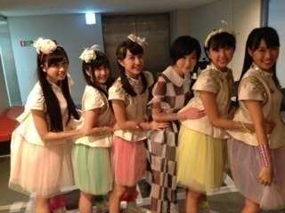

生駒です！
まず今日は山中湖にてイベントがございます！
生駒初めて行きます！
ファンの皆様も近くにお住まいの方は是非是非来て下さい！
そして遠くから今向かっているよ〜という方！
渋滞ですよね？
おトイレとか大丈夫ですか？
安全運転でお越し下さい！
待ってまーすヽ(・∀・)ﾉヽ(・∀・)ﾉ
そしてFNS夏のうたまつりに出演しました！
見てくださったみなさんありがとうございます！
乃木坂もついにコラボさせて頂くことも出来てすっごく嬉しかった！
ひとつひとつのステージが最高に楽しかった！
生で見る沢山のアーティストの方々の力や歌はとにかくすごかった。
生駒自分の力のなさを実感しました。
あれが出せれてないな〜と思いました。
だからもっと上に行きたいと思います。
最近伝えるという事をいろいろ考えていました。
これが正しいのかわからないけどでも一歩前に進めるように歩んで行きたいです。
燃えてるぜ〜！
頑張るぜ〜！
とりあえずダンスは自信あるからそこはノリノリでいくぜ〜！
歌は自分のこの声がいい響きになるような歌い方を探すぜ〜！
前から探してるけどっ！

ももクロさん！
ずっとお話してみたかったのですが！
叶いました！
おいしゃんやってくださいました！
もしまた機会があればももいろクローバーＺ〜！
を一緒にやりたいです！
成長するぞ！
Ｚeppまってろよ！
ではっ！
へばなっ！